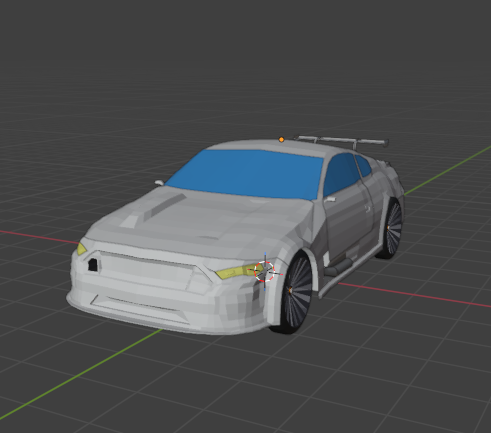
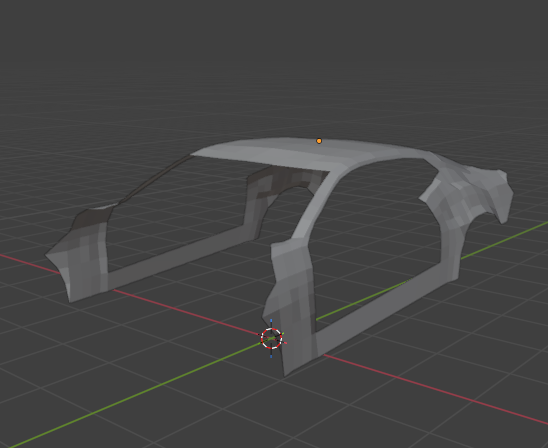
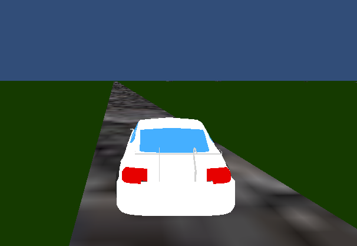

Automovilismo Argentino
Tecnologías: Unity, C#, Blender
Objetivo
El objetivo de este proyecto es desarrollar un juego de carreras inspirado en las categorías de automovilismo argentinas, además de aprender Unity y C#, y aplicar algunos conocimientos ya aprendidos. El principal fin del juego es que sea ejecutable en PCs de bajos recursos y lo mas económico posible, tanto para el desarrollo como para la compra. Contará con diversos modos (práctica, campeonato, trayectoria) y en un principio sera modo un jugador, pero existe la posibilidad de expandirlo a multijugador.
Capturas del Proyecto

Modelo 3D del primer auto diseñado

Estado actual del segundo modelo auto.

Captura de pantalla en el juego.
¿Cómo es el desarrollo?
El desarrollo es completamente individual, con ayudas a partir de tutoriales e IA y realizado en paralelo con los estudios.
Estado Actual
- Se encuentra en una fase muy temprana de desarrollo, hasta el momento cuenta con un circuito poco detallado y un auto con nivel de detalles medios.
- En el aspecto del movimiento del auto, el auto se mueve pero falta pulir el movimiento para que no sea tosco y los movimientos se vean animados.
- En el caso de las texturas aún falta investigar como se aplican a un modelo en escala grande, como es el caso del circuito.
- Se esta desarrollando un segundo auto con mas detalles y mejor diseñado y estructurado que el primero.